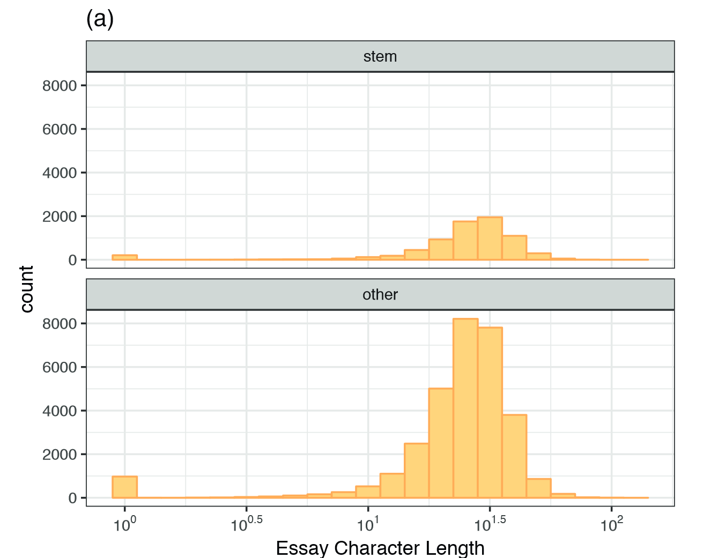
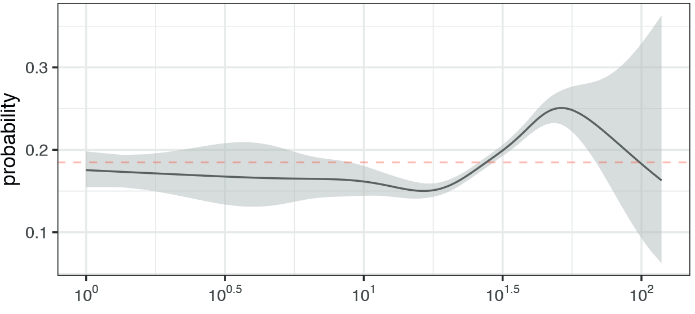
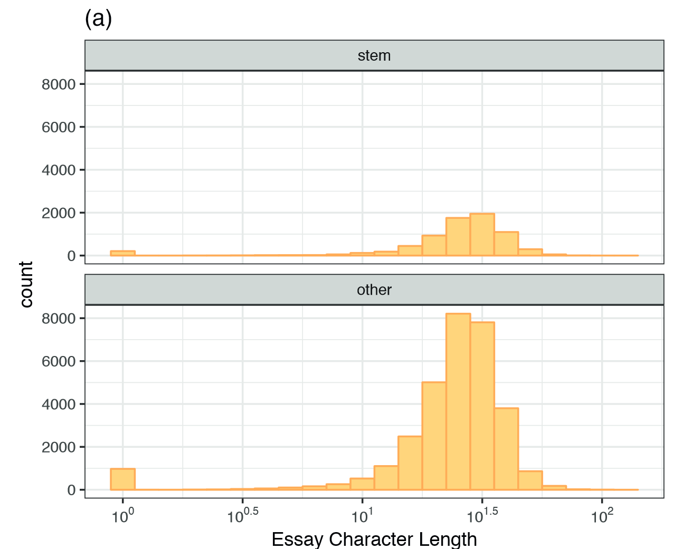
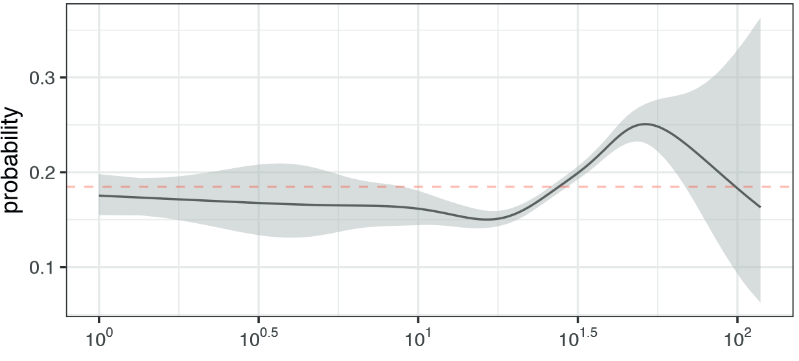

11 Feature Engineering
11.1 Exploratory Visualizations
Univariate visualizations (Box Plots, Violin Plots, and Histograms) to understand the distribution of a single variable.
- understand the distribution of the response variable (symmetric distribution / skewed distribution / distribution has multiple peaks or modes / outliers) to:
- know its variation and provide a lower bound of the expectations of model performance (the residuals from a model that contains these predictors should have less variation than the variation of the response)
- know if it should be transformed to a normal distribution prior to analysis to have better predictive performance
- provide clues for including or creating features that help explain the response
- understand the distribution of the predictors (when moderate number of predictors (< ~100) / if not examine a subset of predictors that are thought to be important)
- scatter plots or mosaic plots to see if any of the responses “cluster” with others
- correspondence analysis can answered the question: linear regression for scatter plot or X2 for mosaic plot. And principal coordinates can be computed to create new variables
- scatter plots or mosaic plots to see if any of the responses “cluster” with others
- understand the distribution of the response variable (symmetric distribution / skewed distribution / distribution has multiple peaks or modes / outliers) to:
scatter plots / bar charts + 95% confidence intervals / smoother of individual predictors and the response outcome:
- to easly test for new crucial predictor (e.g., if we find a strong linear relationship)
- try to understand the relation between predictors and if some points don’t follow the overall pattern trying to understand them could lead to a new feature.
  
 
- a heatmap across the samples and predictors (e.g., to see when these unusual values occur)
- a pairwise correlation plot among the predictors (e.g., high degree of correlation is a clear indicator that the information present across the stations is redundant and could be eliminated or reduced.)
- hierarchical cluster analysis to arrange samples in a way that those that are ‘close’ in the measurement space are also nearby in their location on the axis.
- line plots for time-based predictors (e.g., trends or patterns associated with time to know if variable’s current value is more related to recent values than to values further apart in time)
- PCA / PLS / MDS (multidimensional scaling) : to engineer features that effectively condense the original predictors’ information while retaining crucial predictive information. (if the first and first and second component captures 76.7% and 83.1% respectively the information is redundant and can likely be summarized in a more condensed fashion)
- cumulative amount of variation summarized: how many components are required to summarize a sufficient amount of variation in the data
- scatter plot of the first two components to detect clusters
- violin plot of the first and second components against the underlying variables that appear to affect them the most
11.2 Postmodeling Exploratory Visualizations
To understand the next set of improvements.
- Multiple linear regression (lm): identify relationships that may be useful to include in the model
- partial regression plot:
- the first few levels of a regression or classification tree
11.3 Encoding Categorical Predictors
11.3.1 Creating Dummy Variables for Unordered Categories
Advatanges: Lead to zero-variance predictor which can be remove and omitting rarely occurring values and propagates this noise into the resampling estimates of performance. Disadvatanges: However if dummy zero-variance predictor is remove the model will not be able to predict USE: - When categories are small and it does not lead to zero-variance predictors NOTE: when model can support categorical data it is very difficult to predict if dummy variable will improve the model. Start without dummy variables and, if the model appears promising, to also try refitting using dummy variables.
11.3.2 Encoding Predictors with Many Categories
- Creating Dummy Variables and remove zero-variance predictor
- Hashing function to combine categories to create feature hashing
- Create an “other” category
- Supervised Encoding Methods to encode categorical predictors to numeric columns using the outcome data as a guide
- USE: When the predictor has many possible values
- Technics:
- effect or likelihood encoding: (e.g., mean or median sale price of a house for each neighborhood from the training data and use this statistic to represent the factor level in the model)
- logistic regression model (for classification problems):
- linear regression model (for regression problems):
- word/entity embedding: estimate a smaller set of numeric features that can be used to adequately represent the categorical predictors
- hidden layers
- Disadvantage:
- generate error when a factor level has a single value (to solve the issue use shrinking methods such as Bayesian analysis)
- increases the possibility of overfitting
- can drastically underestimate the variation in the data and might give a falsely optimistic opinion of the utility of the new encoding column
- NOTES: It is strongly recommended that either different data sets be used to estimate the encodings and the predictive model or that their derivation is conducted inside resampling so that the assessment set can measure the overfitting (if it exists).
11.3.3 Approaches for Novel Categories to enable the original model to be applied to new data without completely refitting it
- Create a “other” category and asign the new category no other
- Create a zero-variance dummy variable in the training or test set or both.
- Supervised Encoding Methods to encode categorical predictors to numeric columns using the outcome data as a guide
- USE: When new levels appear after model training
- Encodings for Ordered Data (e.g., “low”, “medium”, and “high.”)
- Technics: polynomial contrast
- Advatanges: By employing polynomial contrasts, we can investigate multiple relationships (linear, quadratic, etc.) simultaneously by including these in the same model.
- Disadvantage:
- polynomial contrasts may not effectively relate a predictor to the response (For example, in some cases, one might expect a trend where “low” and “middle” samples have a roughly equivalent response but “high” samples have a much different response.)
- Not recommended when there are moderate to high number of categories
- Technics: Translate the ordered categories into a single set of numeric scores based on context-specific information.
- Technics: polynomial contrast
11.3.4 Approaches for Text Data
- Transform the text data into the odds-ratio of containing a keywords/link this can be extended to the odds-ratio of containing a text/link for each response variable (The rate of hyperlinks in the STEM profiles (response variable) was 21%, while this rate was 12.4% in the non-STEM profiles. For the STEM profiles, the odds of containing a hyperlink are relatively small with a value of 0.21/1-0.21 = 0.27. For the non-STEM profiles, it is even smaller (0.142).)
- create “text-related” features: (e.g., number of commas, hashtags, mentions, exclamation points)
- code sentiment values
- code language used (e.g., first-, second-, or third-person text and other language elements)
12 Engineering Numeric Predictors converting continuous predictors into a form that a model can better utilize.
12.1 Transformation:
- centering
- scaling
- transforming a distribution to symmetry
12.2 Feature engeneering
- transforming predictors in its original scale to nonlinear scales that may be informative.
- Techincs:
- basis expansions (e.g., Squared predictors for simplistic models such as regressions)
- splines
- combination of kernel function and PCA
- Disadvantage: computational cost
- Techincs:
- reduce the dimension of the predictors
- Techincs:
- PCA (unsupervised approach)
- ICA (unsupervised approach)
- NNMF (unsupervised approach)
- PLS (supervised approach)
- categorizing the response (only appropriate when the response is bimodal (or multimodal)).
- Techincs:
- harness information in unlabeled data or dampen the effect of extreme samples
- Techincs:
- autoencoders
- spatial sign transformation
- distance and depth measures (e.g., class centroids for classification models: centers of the predictor data for each class. For each predictor, the distance to each class centroid can be calculated and these distances can be added to the model)
- Techincs:
13 Working with Profile Data (To Do)
This type of data can occur if a sample is measured repeatedly over time, if a sample has many highly related/correlated predictors, or if sample measurements occur through a hierarchical structure.
Basic preprocessing steps for profiled data can include estimating and adjusting the baseline effect, reducing noise across the profile, and harnessing the information contained in the correlation among predictors. The latter in order to remove the characteristics that prevent this type of data from being used with most predictive models while simultaneously preserving the predictive signal between the profiles and the outcome.